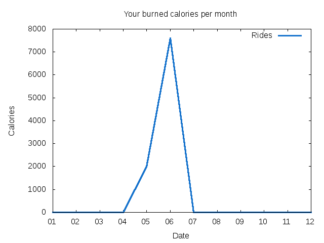
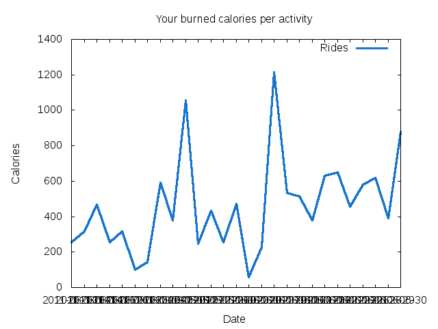
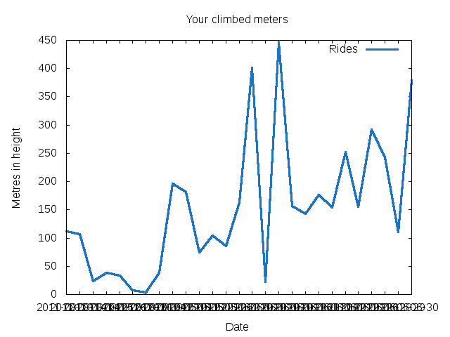
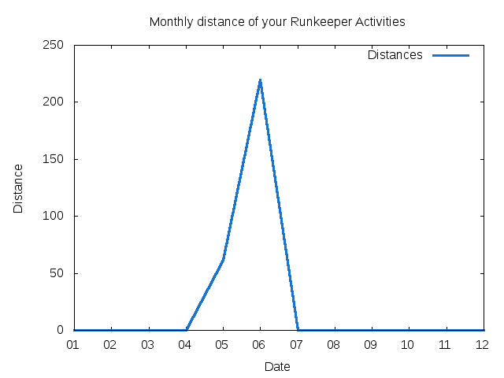
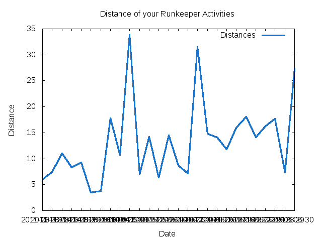
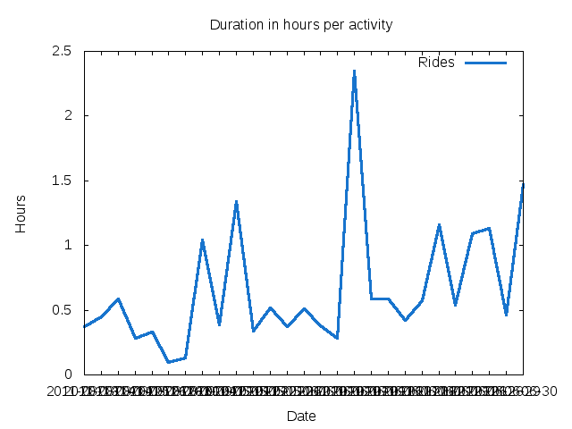
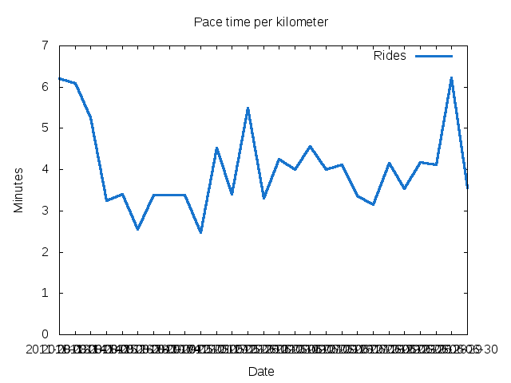
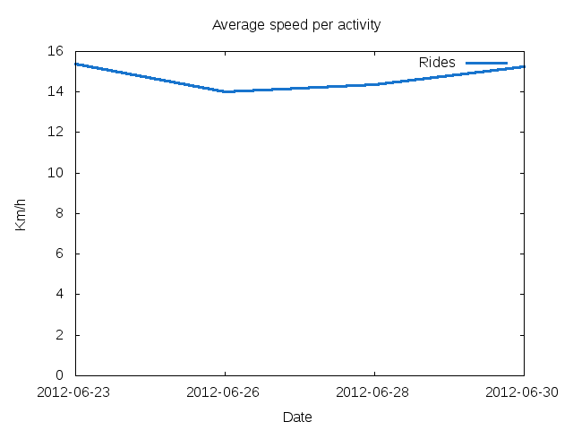

R
unkeeper GnuPlots
Statistics (activity)
Statistics (monthly)
Activities
GitHub
About
Overall Stats
Climb: 1069 metres of height
Calories: 2534
Distance: 75.28 km
Speed Average: 14 km/h
Pace Average: 3 minutes per km
Duration: 4.23 hours
Graphs







